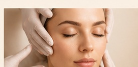
TRATAMENTOS
FACIAIS
Limpeza de pele, microagulhamento e protocolos personalizados para cuidar da saúde e aparência da pele.
Saiba mais →ESTÉTICA • CUIDADO • BEM-ESTAR
Tratamentos faciais e corporais personalizados para valorizar sua beleza com naturalidade.
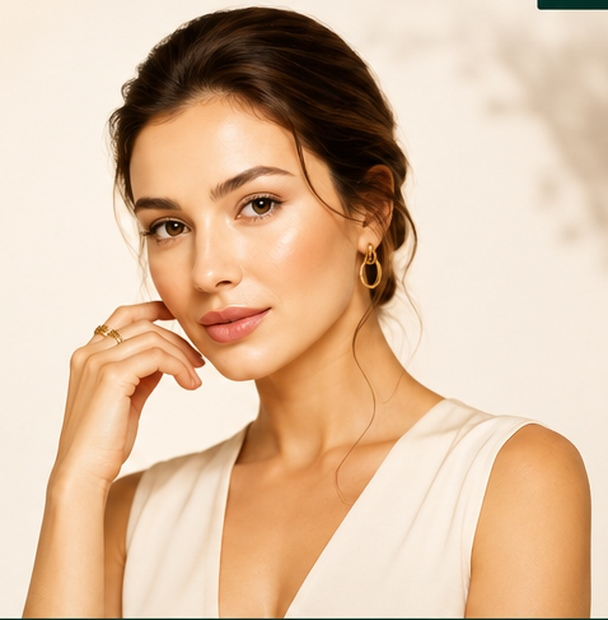

Limpeza de pele, microagulhamento e protocolos personalizados para cuidar da saúde e aparência da pele.
Saiba mais →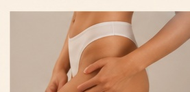
Criolipólise, ultrassom, radiofrequência, enzimas e técnicas voltadas para contorno corporal e firmeza.
Saiba mais →Drenagem linfática e massagem modeladora em um ambiente acolhedor, pensado para desacelerar.
Saiba mais →TECNOLOGIA • ESTRUTURA • CUIDADO
Um ambiente preparado para oferecer conforto, segurança e tratamentos com equipamentos profissionais, produtos selecionados e atenção em cada detalhe.
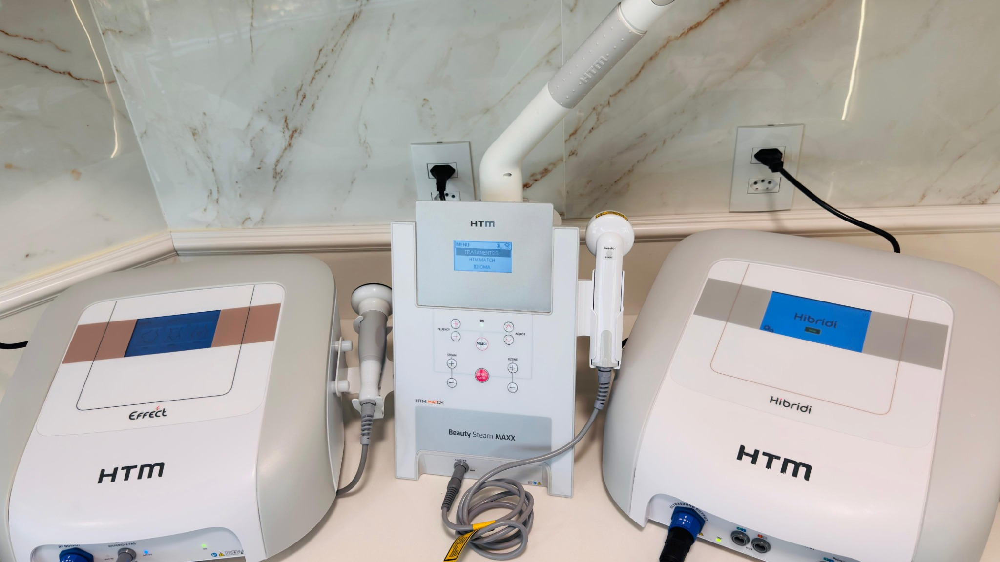
Tecnologias utilizadas em protocolos faciais e corporais personalizados.
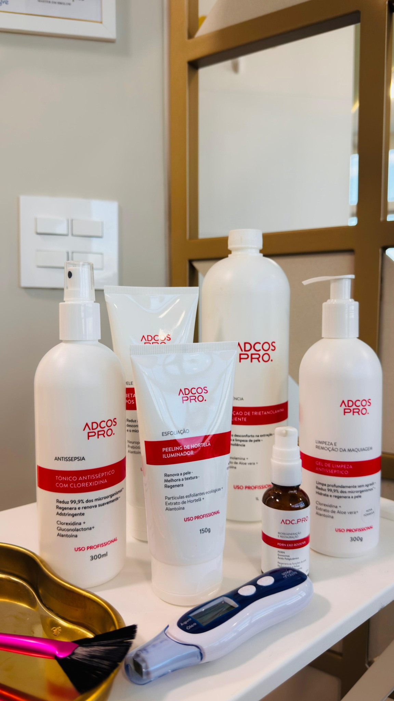
Produtos e cosméticos selecionados para complementar cada cuidado.
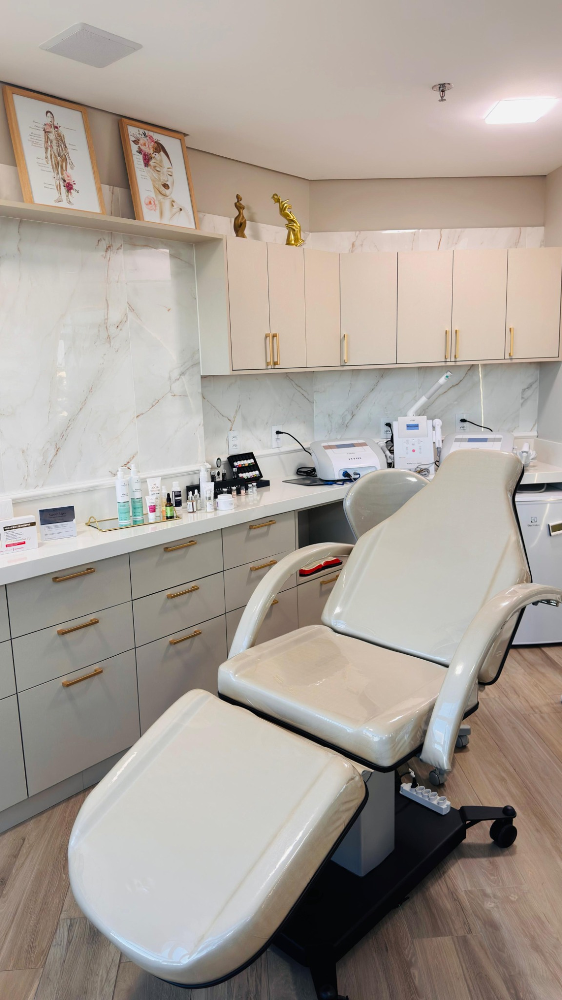
Estrutura organizada, acolhedora e pensada para uma experiência tranquila.
CONHEÇA NOSSO ESPAÇO
Um espaço elegante e acolhedor em Jundiaí, com identidade própria e atenção aos detalhes.
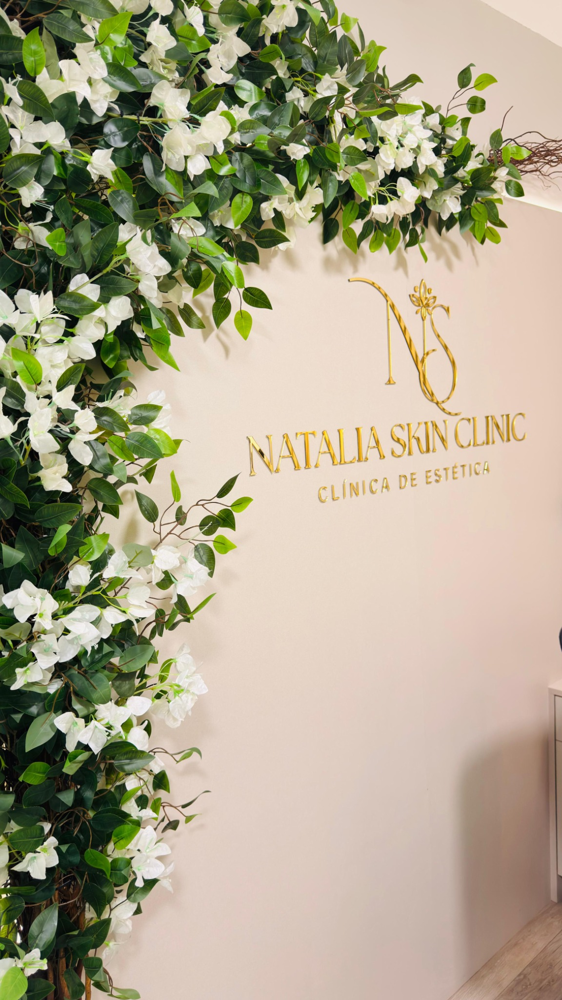
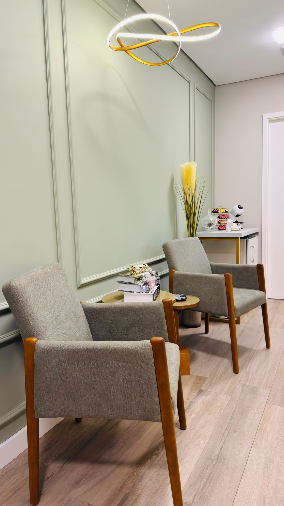
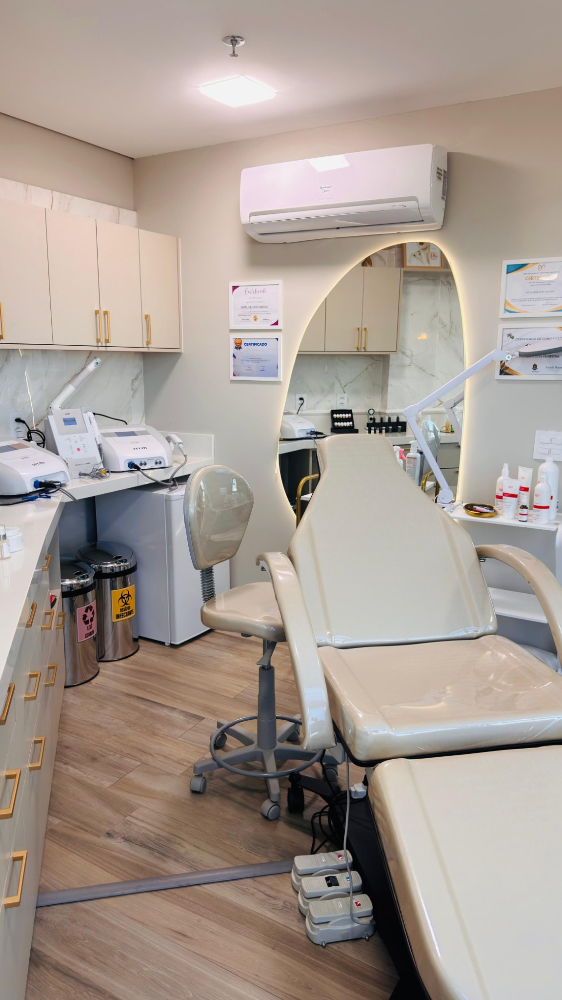
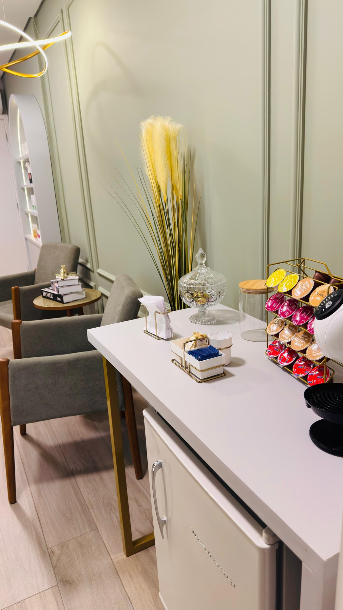
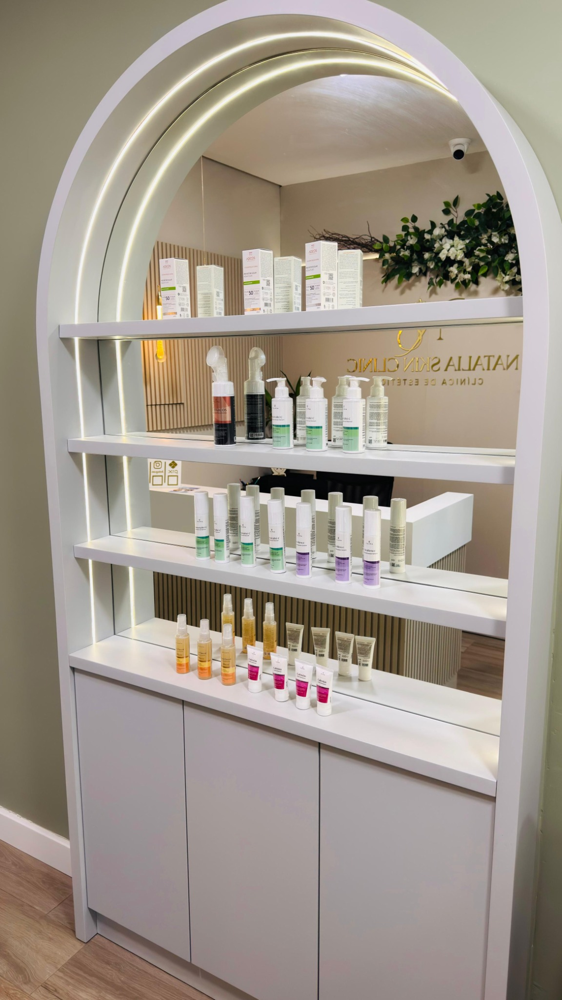
RESULTADOS
Acompanhe alguns resultados de tratamentos corporais realizados com protocolos personalizados.
Os resultados podem variar de pessoa para pessoa.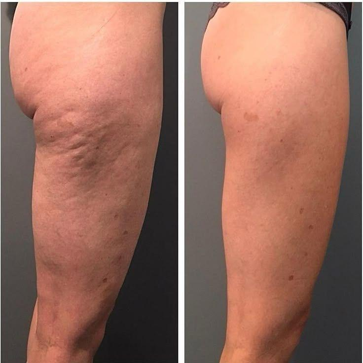
Evolução de tratamento corporal.
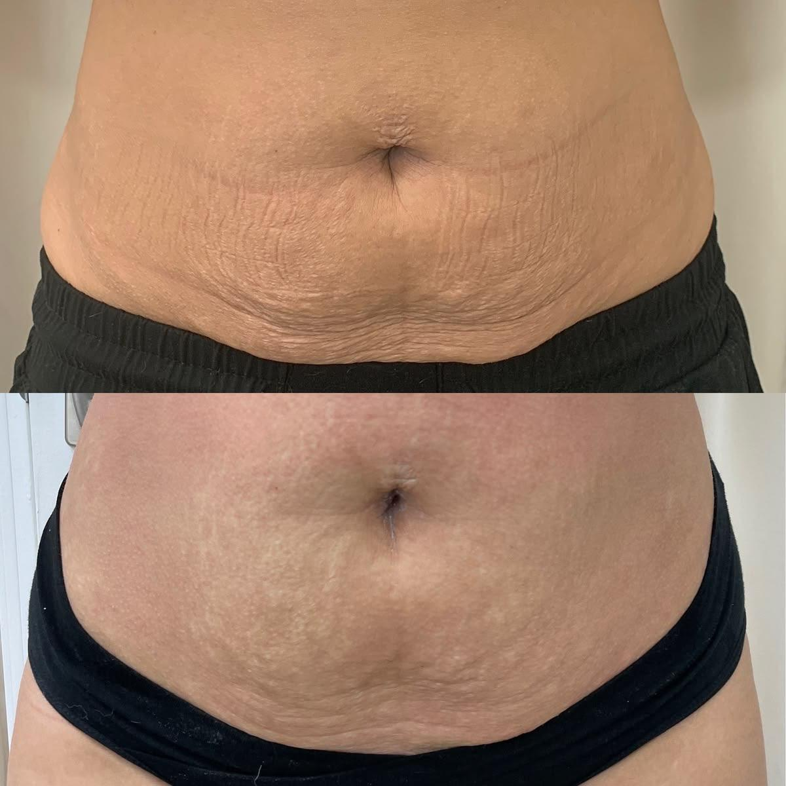
Evolução de tratamento corporal.
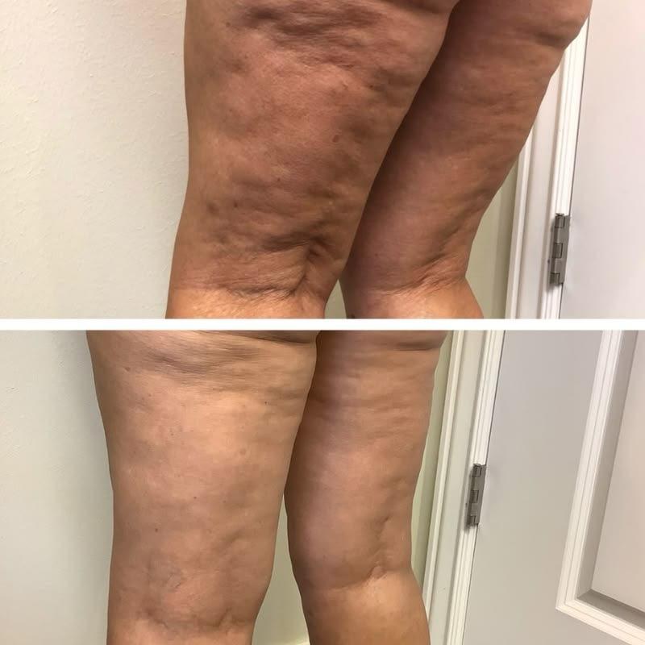
Evolução de tratamento corporal.
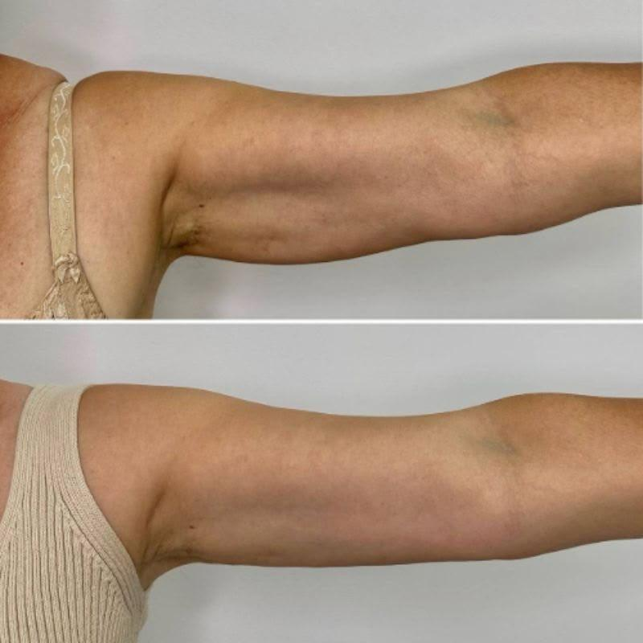
Evolução de tratamento corporal.
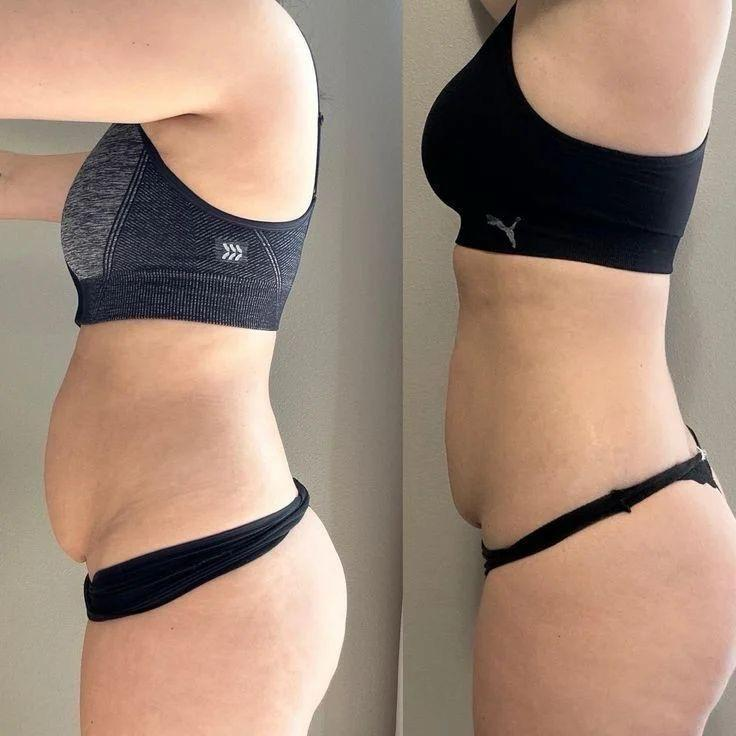
Evolução de tratamento corporal.
PROCEDIMENTOS
Novidades, cuidados, bastidores e conteúdos sobre estética e bem-estar.
CONTATO
Agende sua consulta e conheça uma experiência de cuidado pensada para você.
Agendar pelo WhatsApp →